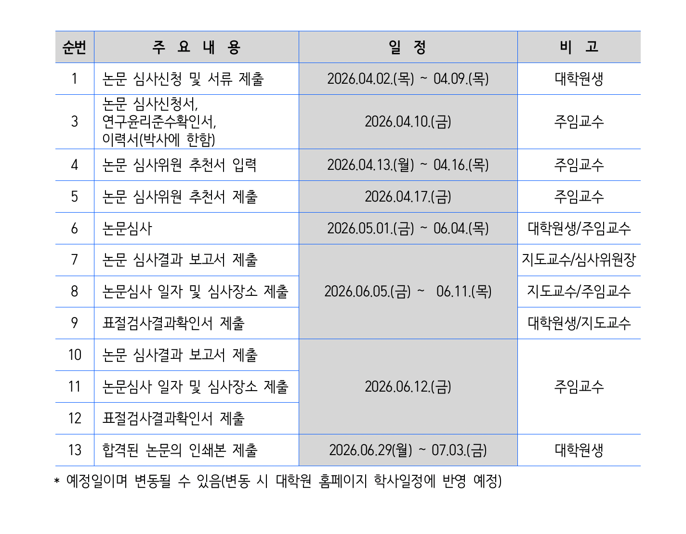
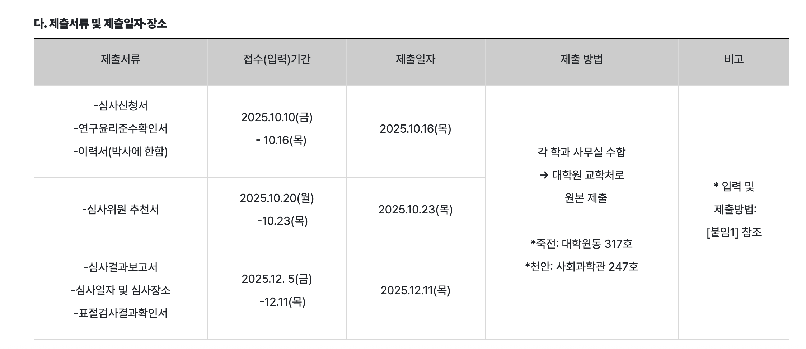
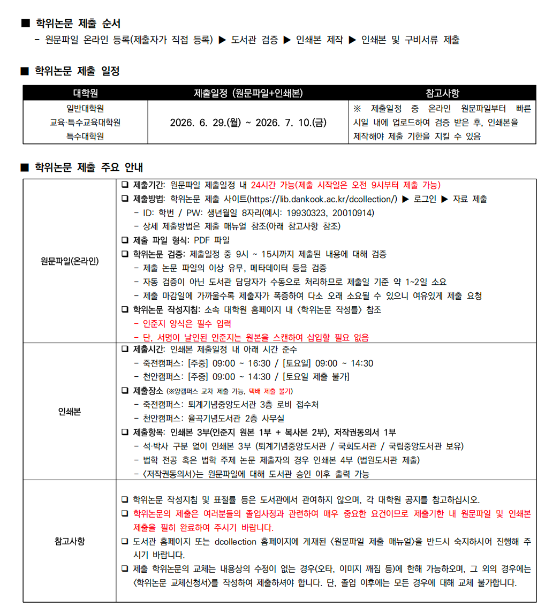
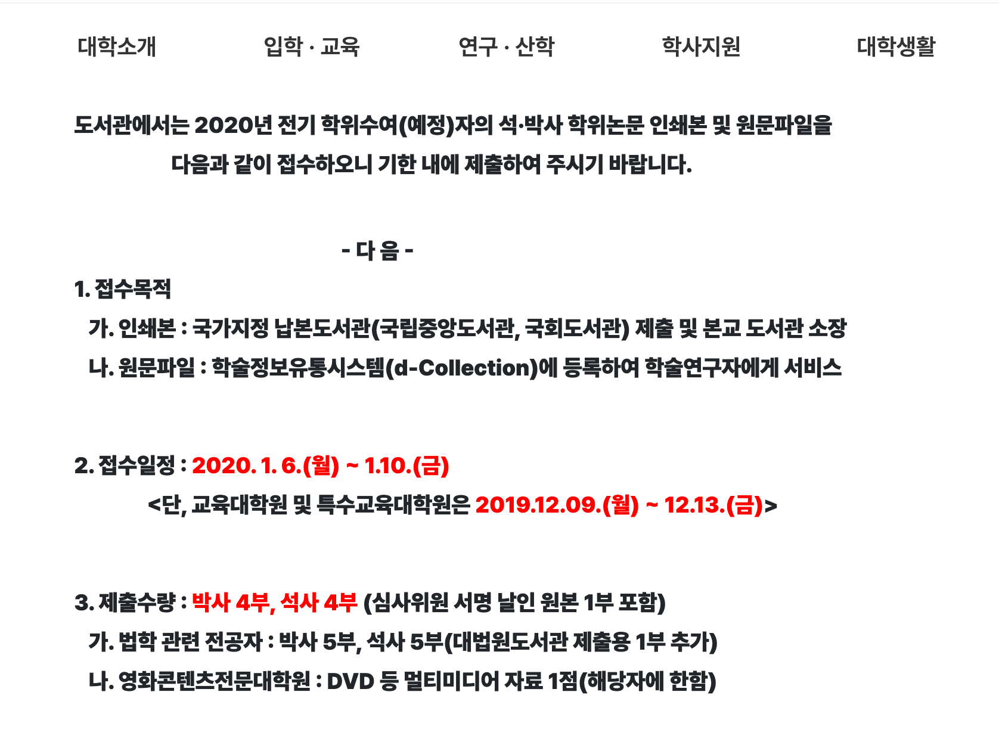

논문 작성, 학위논문 제출 및 투고 준비
이 페이지는 학위논문 제출 일정, 학위논문 작성 참고자료, 그리고 저널 논문 투고 시 주의해야 할 사항을 정리한 문서입니다.
아래 내용은 실험실 후배들이 논문을 준비할 때 참고할 수 있도록 정리한 경험 기반 안내입니다.
1. 학위논문 제출 일정
학위논문 관련 일정은 매년 학교 공지에 따라 달라질 수 있으므로, 반드시 해당 연도의 대학원 공지를 확인해야 합니다.
아래 일정은 참고용 예시입니다.
1.1 제1학기 일정
보통 제1학기에는 아래와 같은 순서로 진행됩니다.
| 기간 | 내용 |
|---|---|
| 4.2 ~ 4.9 | 학위논문 신청 및 관련 서류 제출 |
| 5.1 ~ 6.4 | 논문 심사 |
| 6.29 ~ 7.3 | 논문 인쇄본 제작 및 제출 |

1.2 제2학기 일정
보통 제2학기에는 아래와 같은 순서로 진행됩니다.
| 기간 | 내용 |
|---|---|
| 10.10 ~ 10.16 | 학위논문 신청 및 관련 서류 제출 |
| 11.1 ~ 12.4 | 논문 심사 |
| 1.6 ~ 1.10 | 논문 인쇄본 제작 및 제출 |

git push origin main 위 일정은 예시이므로 매년 반드시 학교 공지사항을 다시 확인해야 합니다.특히 신청 기간, 심사 기간, 도서관 제출 기간을 놓치면 졸업 일정에 문제가 생길 수 있습니다.
2. 학위논문 제작 및 도서관 제출
논문 심사가 끝난 후에는 바로 인쇄하는 것이 아니라, 먼저 도서관 시스템에 원문파일을 제출하고 검증을 받아야 합니다.
도서관 검증이 완료된 후 인쇄본을 제작하는 것이 안전합니다.
2.1 논문 제작 관련 안내


!!! tip "경험상 중요한 점"
마감일 직전에 제출하면 도서관 검증이 늦어질 수 있습니다.
가능하면 원문파일은 마감일보다 며칠 먼저 제출하고, 검증 완료 후 인쇄본을 제작하는 것이 좋습니다.
3. 실험실 참고자료
아래 자료는 학위논문 작성, 논문 형식 확인, 발표자료 준비 시 참고할 수 있습니다.
!!! note "파일명 관련"
파일명은 가능하면 영어로 저장하는 것이 좋습니다.
한글 파일명도 사용할 수 있지만, GitHub Pages에서 링크 오류가 생길 수 있으므로 영어 파일명을 추천합니다.
4. 학위논문 작성 시 주의사항
석사논문과 박사논문은 구성과 분량에서 차이가 있습니다.
석사논문은 보통 하나의 연구 주제를 중심으로 작성합니다.
박사논문은 하나의 큰 주제 아래 여러 개의 세부 연구를 포함하는 경우가 많습니다.
작성할 때는 아래 사항을 미리 확인하는 것이 좋습니다.
- 학교 학위논문 작성 지침 확인
- 표지, 인준지, 초록, 목차 양식 확인
- 그림 번호와 표 번호 확인
- 참고문헌 형식 통일
- PDF 변환 후 페이지 깨짐 확인
- 인준지 양식 확인
- 도서관 제출용 원문파일 확인
- 인쇄본 제출 부수 확인
!!! warning "주의" 심사 후 제목이나 내용이 바뀐 경우, 학교 시스템과 도서관 제출 정보가 일치하는지 반드시 확인해야 합니다.
5. 저널 논문 투고 시 주의사항
저널 논문은 학위논문과 다르게, 투고하려는 저널의 형식과 요구사항에 맞추어 작성해야 합니다.
5.1 저널 선택
저널을 선택할 때는 아래 내용을 확인합니다.
- 연구 주제와 저널 scope가 맞는지 확인
- 최근 출판된 논문 주제 확인
- 논문 형식 및 분량 제한 확인
- Open Access 여부와 APC 확인
- 심사 기간 확인
- 그림, 표, Supplementary Information 요구사항 확인
5.2 그림 준비
이론관련논문 그림은 보통 9개 이내로 정리하는 경우가 많습니다.
저널에 따라 다르지만, 너무 많은 그림을 본문에 넣기보다는 핵심 그림만 본문에 두고 나머지는 Supporting Information에 넣는 것이 좋습니다.
그림 준비 시 확인할 점은 아래와 같습니다.
- 해상도는 보통 300 dpi 이상 권장
- 가능하면 TIFF 형식으로 저장
- 그림 안의 글자 크기 통일
- 축 이름, 단위, 범례 확인
- 그림 번호와 본문 설명 일치 확인
- 캡션만 읽어도 그림의 의미를 이해할 수 있도록 작성
5.3 참고문헌 관리
참고문헌은 Mendeley, Zotero, EndNote 같은 프로그램을 사용하면 편합니다.
확인할 점은 아래와 같습니다.
- 저널 형식에 맞는 citation style 적용
- 저자명, 연도, 권호, 페이지 확인
- DOI 누락 여부 확인
- 본문 인용 순서와 참고문헌 목록 일치 확인
5.4 Cover Letter 작성
Cover letter는 너무 길게 쓰지 않는 것이 좋습니다.
보통 아래 내용을 간단히 포함합니다.
- 논문 제목
- 투고 저널명
- 연구의 핵심 내용
- 이 논문이 왜 해당 저널에 적합한지
- 저자 정보
- 중복 투고가 아니라는 statement
!!! note "작성 팁"
Cover letter는 논문을 다시 길게 요약하는 글이 아니라,
편집자에게 “이 논문이 왜 이 저널에 적합한지”를 짧고 명확하게 설명하는 글입니다.
5.5 TOC 또는 Graphical Abstract
일부 저널은 TOC figure 또는 Graphical Abstract를 요구합니다.
준비할 때는 아래를 확인합니다.
- 저널에서 요구하는 이미지 크기
- 글자가 너무 작지 않은지 확인
- 너무 복잡하지 않게 구성
- 논문의 핵심 메시지가 한눈에 보이도록 작성
6. 논문 투고 전 최종 체크리스트
투고 전 아래 내용을 마지막으로 확인합니다.
- [ ] 저널 scope 확인
- [ ] Author Guidelines 확인
- [ ] 제목, 저자명, 소속 확인
- [ ] 교신저자 정보 확인
- [ ] Abstract 길이 확인
- [ ] Keywords 확인
- [ ] Figure 번호 및 Caption 확인
- [ ] Table 번호 및 Caption 확인
- [ ] 참고문헌 형식 확인
- [ ] Supplementary Information 확인
- [ ] Cover Letter 작성
- [ ] TOC figure 또는 Graphical Abstract 필요 여부 확인
- [ ] 모든 파일명을 영어로 정리
- [ ] 최종 PDF 확인